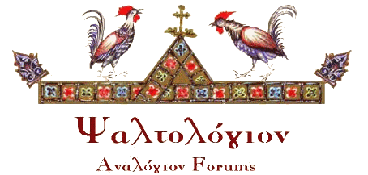

Psaltologion / Ψαλτολόγιον : The discussion forum of the Analogion on-line community.

Iakovos Nafpliotis, Protopsaltis of the Great Church of Christ (1864-1942).
All known historical recordings of Byzantine Chant (the oldest in the world), biography, images and more.
Contents
Rare recordings, performance style analysis, classical scores, and more ...
Musicological topics
Theory, isokratema, history, typikon, interpretation, intervals and more ...
Theory, isokratema, history, typikon, interpretation, intervals and more ...
People
Psaltai, composers, musicologists, researchers, historians and more ...
Psaltai, composers, musicologists, researchers, historians and more ...
Typikon
Books, articles, monastic, parish, and more ...
Books, articles, monastic, parish, and more ...
Websites
Links to places on the web with info on Byzantine Chant
Links to places on the web with info on Byzantine Chant
{kind=link}
Περιεχόμενα
Συγκριτική ανάλυση επιλεγμένων συνθέσεων
Σπάνιες ηχογραφήσεις, ανάλυση εκτέλεσης, κλασσικά κείμενα και άλλα...
Μουσικολογικά Θέματα
Θεωρία, ισοκράτημα. ιστορία, τυπικό, αναλύσεις, διαστήματα και άλλα...
Άνθρωποι της Ψαλτικής
Ψάλτες, μελοποιοί, μουσικολόγοι, ερευνητές, ιστορικοί και άλλοι....
Βιβλιοθήκη
Μουσικά κείμενα, άρθρα, βιβλία, εγκύκλιοι, διατριβές και άλλα...
Σχολεία
Πληροφορίες για σχολές, βοηθήματα μάθησης και διδασκαλίας, δίδακτρα, αναγνώριση τίτλων και άλλα...
Κουλτούρες
Ψαλτική στα Αραβικά, Ρουμάνικα, Αγγλικά, Γαλλικά, Σέρβικα και άλλα...
Τυπικό
Βιβλία, άρθρα, μοναστικό και ενοριακό τυπικό και άλλα...
Συνέδρια
Ημερομηνίες, προγράμματα, τοποθεσίες, πρακτικά και άλλα...
Τεχνολογικά
Γραμματοσειρές, OCR (Οπτική αναγνώριση χαρακτήρων), εφαρμογές σε υπολογιστή και άλλα...
Εικόνες
Εικόνες από ψάλτες, μελοποιούς, μουσικολόγους, χειρόγραφα και άλλα...
Αγοράστε
Πληροφορίες για βιβλία, βιβλιοπωλεία, κατάλογοι και τιμοκατάλογοι και άλλα...
Ιστοτόποι
Σύνδεσμοι σε σχετικούς τόπους στο διαδίκτυο....
Σπάνιες ηχογραφήσεις, ανάλυση εκτέλεσης, κλασσικά κείμενα και άλλα...
Μουσικολογικά Θέματα
Θεωρία, ισοκράτημα. ιστορία, τυπικό, αναλύσεις, διαστήματα και άλλα...
Άνθρωποι της Ψαλτικής
Ψάλτες, μελοποιοί, μουσικολόγοι, ερευνητές, ιστορικοί και άλλοι....
Βιβλιοθήκη
Μουσικά κείμενα, άρθρα, βιβλία, εγκύκλιοι, διατριβές και άλλα...
Σχολεία
Πληροφορίες για σχολές, βοηθήματα μάθησης και διδασκαλίας, δίδακτρα, αναγνώριση τίτλων και άλλα...
Κουλτούρες
Ψαλτική στα Αραβικά, Ρουμάνικα, Αγγλικά, Γαλλικά, Σέρβικα και άλλα...
Τυπικό
Βιβλία, άρθρα, μοναστικό και ενοριακό τυπικό και άλλα...
Συνέδρια
Ημερομηνίες, προγράμματα, τοποθεσίες, πρακτικά και άλλα...
Τεχνολογικά
Γραμματοσειρές, OCR (Οπτική αναγνώριση χαρακτήρων), εφαρμογές σε υπολογιστή και άλλα...
Εικόνες
Εικόνες από ψάλτες, μελοποιούς, μουσικολόγους, χειρόγραφα και άλλα...
Αγοράστε
Πληροφορίες για βιβλία, βιβλιοπωλεία, κατάλογοι και τιμοκατάλογοι και άλλα...
Ιστοτόποι
Σύνδεσμοι σε σχετικούς τόπους στο διαδίκτυο....